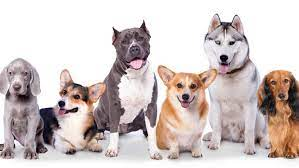
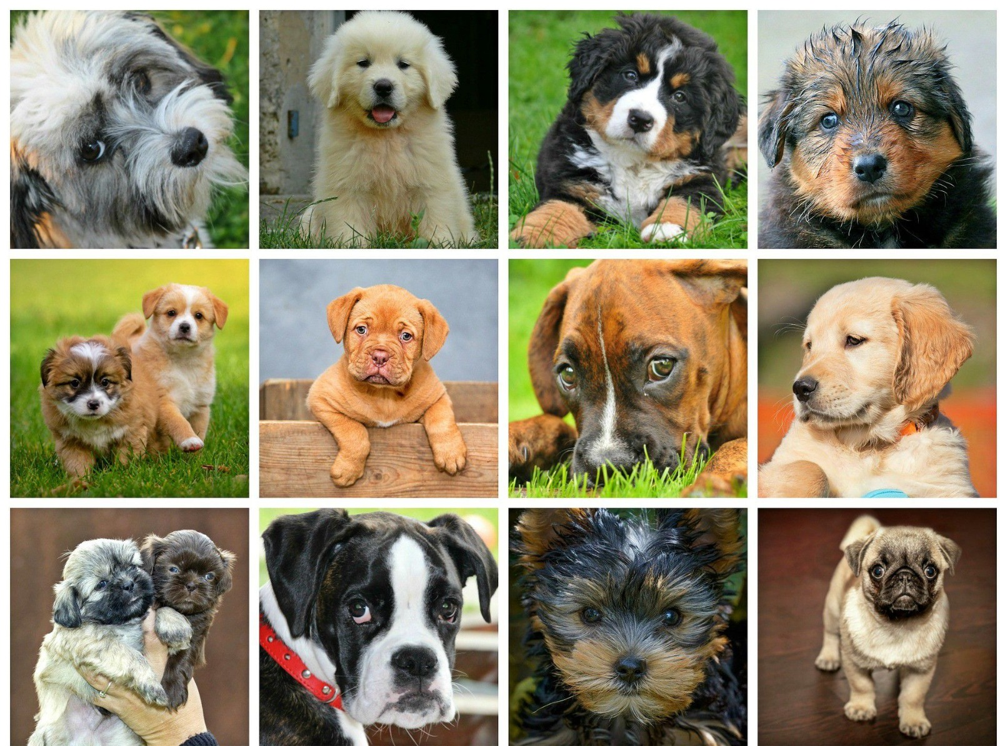
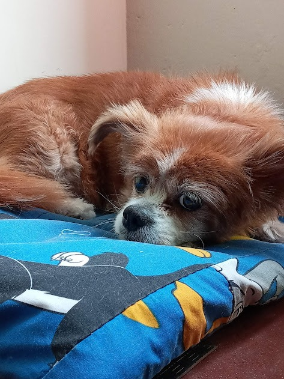
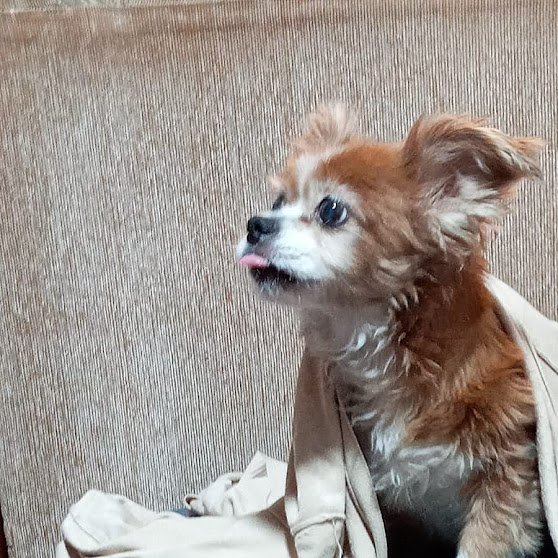
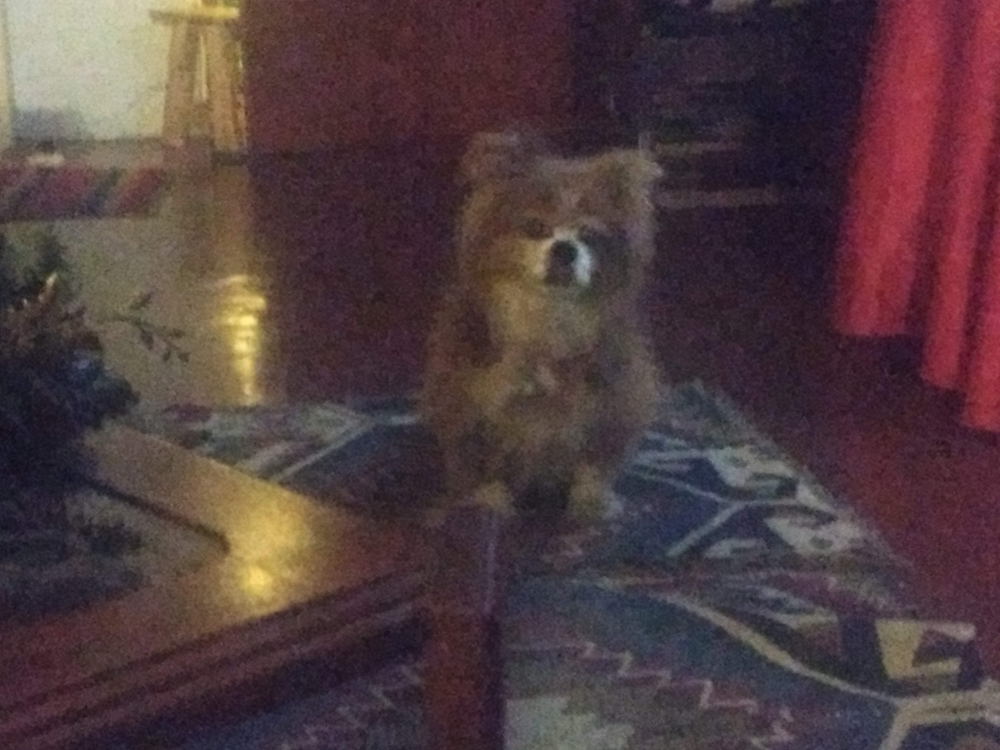

El perro, llamado perro doméstico o can, y en algunos lugares coloquialmente llamado chucho, tuso, choco, entre
otros; es un mamífero carnívoro de la familia de los cánidos, que constituye una especie del género Canis.


Pero en este caso nos enfocaremos en los perros que he conocido y tenido un grato contacto cuales formaron un lazo de
"amistad" conmigo.Por ejemplo tenemos:
Yevi
Chubi
Manchi
bobby
Hoja de Vida de Yevi



Introduccion:
Hola yo era Yevi o tambien conocida como "Cuarto de pollo".Lamentablemente en
mi vida se cruzaria una emfermedad a los riñones por lo que el 07/12/21 falleci tras 17 años
de vida pero no te preocupes tuve una buena vida y una muy buena instancia final.Aun asi te contare como era mi
rutina diaria.Todo comenzaba muy temprano siendo exactos a las 8am sentandome al lado de mi madre Yazmin
donde yo no hacia nada pero me gustaba ver como se movia de un lado al otro dentro de la cocina,de alli yo iba a dormir porque
yo era muy dormilona,a las 9am iba donde mis hermanos Sebastian y joaquin para levantarlos con un ladrido o tambien me subia a
sus camas y les lamia la cara o tambien me dormia con ellos luego de eso los acompañaba a desayunar y esperaba a que me den algo por
por lo que ellos me enseñarian a dar la pata para pedir algo de comer, al medio dia jugaria con mi pelota hasta que me cansara a lo
que luego iria a donde pasaria la mayoria del dia al "valcon" que era las escaleras que me daban vista a toda la cuadra porque yo vivia
en un tercer piso luego de estar hechada afuera durante horas iria a dormir debajo de mi padre Raul ya que el trabajaba escribiendo en su
silla yo me pondria debajo de el para estar tranquila hasta que fuera la cena donde yo me sentaba al costado de mi heramno oaquin hasta que
terminara y me llevara a apsear luego de volve me pondria a descansar y finalmente dormir
Algunas de las cosas que me gustaban comer eran:
Cascara de papa
Mandarina
Pollito
Galletas de perro
Pate para perro
Keke de naranja
Ahora que sabes màs de Yevi, dejame un comentario sobre ella :D
Hoja de Vida de Chubi
Introduccion:
Hola humano, yo soy chubi el perro "actual" de la familia, te contare un poco de mi.Naci en una casa
abandonada cual estaba ocuapada por una persona con problemas de ezquisofrenia por lo cual me crie mis primeros 2 meses e un lugar no apto cuando
mi familia actual me rescato me tuvieron que hacer mucho tratamientos(nota: ptmr chubi de wea me hiciste gastar todos mis ahorros perro culiao)pero
gracias a esto pude seguir con vida hasta ahora sigo con algunos problemas pero son inferiores a los que tenia antes.Por lo que ahora agradezco a mis amos
actualmente tengo 1 año recien cumplidos :D
Algunas de las cosas que me gustan hacer es:
Joder
Comer Camote
subirme a los muebles a desordenar(perro culiao wn)
Jugar con mis juguetes en el parque
Ahora que sabes màs de Chubi, dejame un comentario sobre ella :D

.jpg)
.jpg)
.jpg)